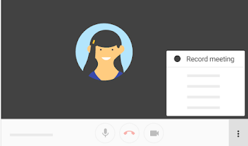

Cyber
HUB
Meet - Record Meeting
Step 1 - Open Meet and start or join a meeting.
Step 2 - Click More and then Record meeting.

Step 3 - Wait for the recording to start.
Other participants are notified when the recording starts or stops.
Step 4 - Click More and then Stop recording when you finish.
Step 5 - Click Stop recording again to verify.
Step 6 - Wait for the recording file to be generated and saved to the meeting organizer’s My Drive > Meet Recordings folder. An email with the recording link is also sent to the meeting organizer and the person who started the recording.
Contacts